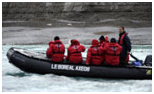
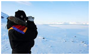
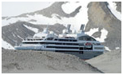
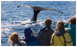
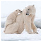
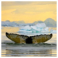
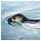
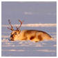
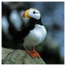

Why Travel to the Arctic with Abercrombie & Kent
Instead of merely taking you to the Arctic, we welcome you inside the stunning polar region. Intimate lectures by renowned scientists and authors, expertly led excursions are just a few of the activities we have in store for you, all from aboard the best luxury expedition cruiser plying through the serene waters of the Arctic Ocean today. Here are more reasons why you should choose an A&K Arctic journey.
The Finest Guides in the Industry
Our staff comprises of the most qualified professionals, including top geologists, ornithologists, historians and marine biologists, who ensure you have exceptional expert guidance at every turn of your trip, in addition to enriching lectures that will blow your mind away. Our Zodiac drivers are also certified field naturalists and endow you with knowledgeable commentary on sights and wildlife, both while cruising and on land. With A&K, we offer countless opportunities for you to directly interact with experts one-on-one, as we feature an unbeatable guide-to-passenger ratio of 1:12.
Read more
A Range of Itineraries and Hands-On Field Experiences
Daily excursions include searching for polar bears on the Svalbard Islands, exploring the world-famous Husavik Whale Museum and traversing Greenlands secluded Ittoqqortoormiit village, in addition to an impressive voyage aboard Le Boreal. From glaciers and fjords to massive wildlife and remote villages, A&Ks diverse itineraries bring the Arctics most astonishing features within reach.
Read more
The Best Way to Cruise to the Arctic Today: Le Boreal
Expect the best in style and luxury when travelling on board the sturdy and sleek Le Boreal with A&K. We limit the cruisers complement to 199 guests, giving you personalized attention and a cabin with a balcony for every party. In addition, our cruises surpass the strictest environmental protocols and focus on educating and providing travellers the opportunity to participate in conservation efforts.
Read more
Legendary A&K Service, From Start to Finish
Our expedition team is hand-selected exclusively by A&K to meet our meticulous service standards; our programs are English-speaking and fully A&K operated. Furthermore, our all-inclusive programs include all cruise and land arrangements, ensuring we take care of every little detail to make your journey an unforgettable one.
The Arctic is home to an astonishing and extraordinary level of wildlife. Below are a few of the resilient creatures you will get to know on your visit.
Polar Bear
Gigantic and glorious, the solitary polar bear is found only in the Arctic, where it lives and hunts for seals near ice-covered waters. Well adapted to the harsh climate, this semi-aquatic bear can swim for several hours and reach speeds of up to 25 mph on land. Rapid loss of sea ice caused by climate change presents a major threat to the species.
 Arctic Fox
Arctic Fox
Finding refuge in burrows, the furry Arctic fox feeds on everything from fish and rodents to leftover scraps from a polar bear. In winter, the fox grows a white, almost blue-gray coat to match its snowy surroundings; as summer approaches, the coat turns brown or black to better camouflage with tundra vegetation.
Humpback Whale
The humpbacks distinguishing features include long pectoral fins, a knobby head and intimidating length (about 53 feet long). Known for breaching and slapping the water, these gentle giants feed in krill-rich polar waters during the summer months.
Ringed Seal
The most common Arctic seal and also the smallest seal species, the ringed seal is named for the characteristic light-color ringed patterns on its coat. The main prey of the polar bear, they can remain submerged for up to 45 minutes and sometimes blow bubbles first to check for the bears.
Reindeer
Also known as caribou, this species of deer native to the Arctic is found in the northern reaches of North America, Europe, Asia and Greenland. Its the only species in which both male and female have antlers; the reindeer also complete an annual, heroic 600-mile summer migration.
Puffins
The Atlantic puffin is found solely in the North Atlantic Ocean, living most of their lives at sea and known to be exceptional swimmers. In summer, the puffins beak is red, blue and yellow and explains for the birds nickname as the sea parrot; in winter, part of the beak is shed.